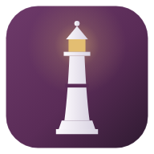

ILLUMÉNOCTIS
MDI Model Management · version 1.2.193
iPhone · iPad FREE
- Open this page in Safari.이 페이지를 Safari에서 여세요.
- Tap Open the app below, then Share ⬆︎ → Add to Home Screen.아래 앱 열기를 누른 뒤 공유 → 홈 화면에 추가.
- Open ILLUMÉNOCTIS from the Home Screen, sign in, and tap Turn on alerts.홈 화면의 ILLUMÉNOCTIS를 열고 로그인한 뒤 알림 켜기를 누르세요.
Alerts need iOS 16.4 or newer. · 알림은 iOS 16.4 이상에서 됩니다.
Android FREE
- Open this page in Chrome.Chrome에서 여세요.
- Tap Install app (or Chrome menu ⋮ → Install app).앱 설치를 누르세요 (또는 Chrome 메뉴 ⋮ → 앱 설치).
- Open ILLUMÉNOCTIS, sign in, and tap Turn on alerts.앱을 열고 로그인한 뒤 알림 켜기.
Windows
- Open ILLUMENOCTIS-Setup.exe.받은 파일을 여세요.
- If Windows shows “Windows protected your PC”, click More info → Run anyway.“Windows의 PC 보호” 창이 뜨면 추가 정보 → 실행.
The full program: Booking folders, Dropbox, Hiworks, the crawler. Updates itself. · 전체 프로그램, 자동 업데이트.
Mac
- Unzip, then drag ILLUMENOCTIS into Applications.압축을 풀고 응용 프로그램 폴더로 옮기세요.
- The first time, right-click it → Open → Open.처음 한 번은 오른쪽 클릭 → 열기 → 열기.
- If the Mac still says it can't be opened: System Settings → Privacy & Security → Open Anyway.그래도 열리지 않으면: 시스템 설정 → 개인정보 보호 및 보안 → 그래도 열기.
- If it says the app “is damaged”: open Terminal and run
xattr -cr /Applications/ILLUMENOCTIS.app, then open it again.“손상되었습니다”라고 나오면: 터미널에서 위 명령을 실행한 뒤 다시 여세요.
Apple menu → About This Mac shows “Chip: Apple M…” for Apple Silicon. · 이 Mac에 관하여 → 칩이 “Apple M…”이면 Apple Silicon.
In any browser · 브라우저에서 바로
On a computer, Chrome and Edge can also install it as an app (the install icon in the address bar). · 컴퓨터의 Chrome·Edge에서도 주소창의 설치 아이콘으로 앱처럼 설치할 수 있습니다.